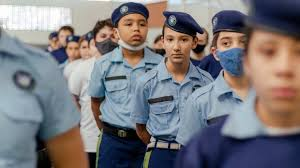

Colégio cívico-militar
Os colégios cívico-militares combinam a estrutura de ensino tradicional com disciplina e organização inspiradas nas Forças Armadas. O objetivo é promover um ambiente de ensino mais estruturado e disciplinado, com ênfase em valores cívicos e militares. A gestão geralmente é compartilhada entre civis e militares, o que busca integrar aspectos educacionais com práticas de liderança e respeito.

Hasteamento da bandeira e hino nacional
Diariamente, antes do início das aulas, os estudantes participam da cerimônia de hasteamento da bandeira, apresentação do hino nacional e de formação filas para verificação do uso correto do uniforme e para a replicação de anúncios do dia. Esse momento, chamado de formatura, é de responsabilidade dos monitores - funcionários das forças militares (no caso de São Paulo, eles serão policiais militares). No documento em que lista as diretrizes das escolas cívico militares no Paraná, a atividade é justificada como "oportunidades para que os alunos pratiquem no dia a dia a rotina do treinamento Cívico-Militar realizado pelos monitores militares estaduais na instituição de ensino que incentivam o patriotismo e o culto aos símbolos nacionais